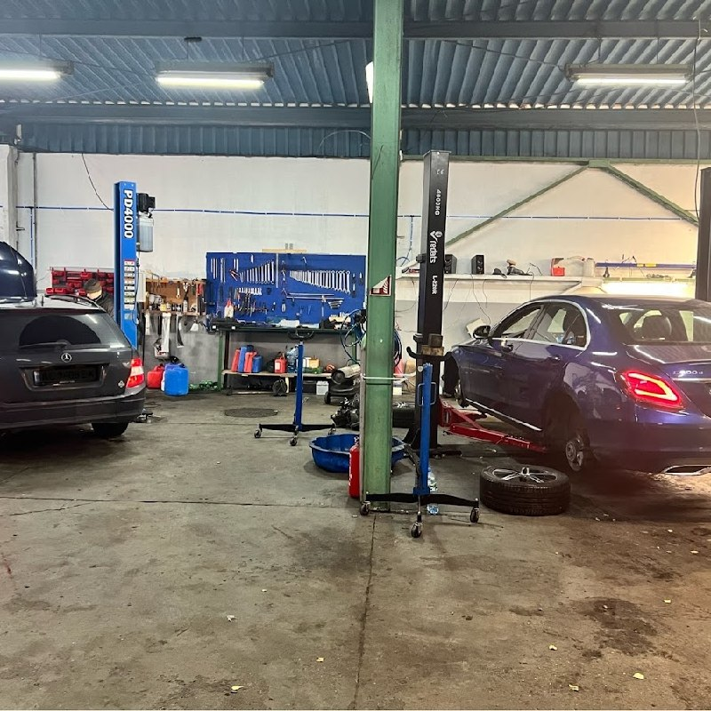
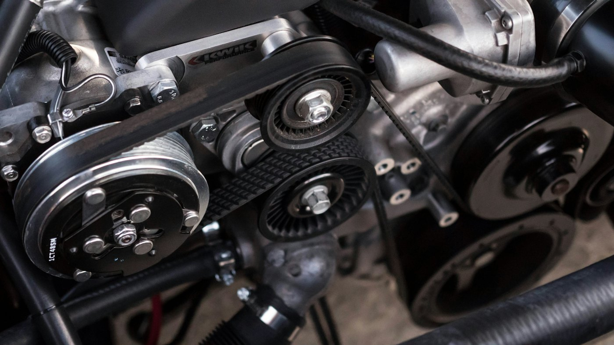
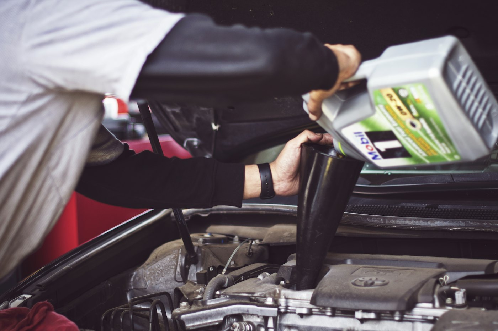
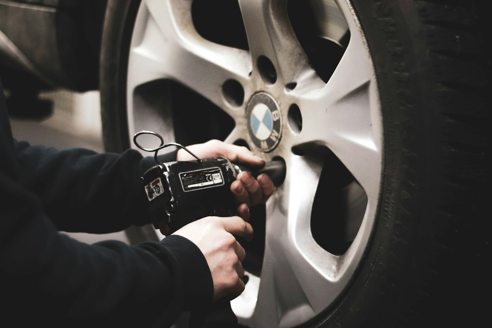
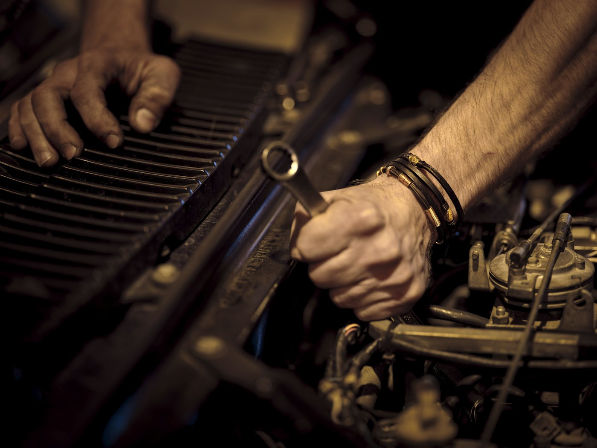
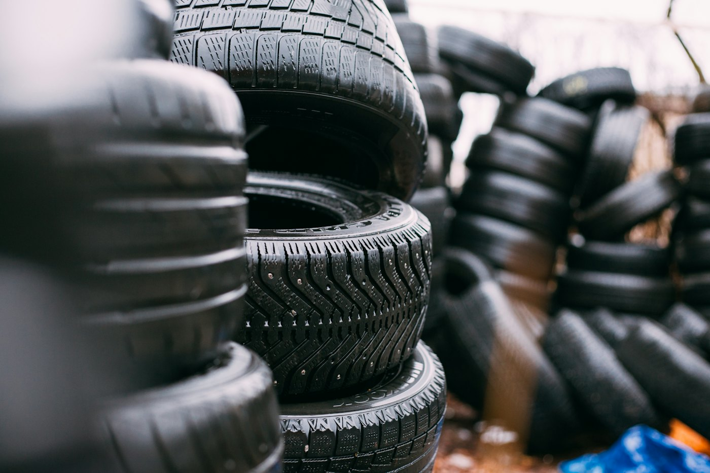
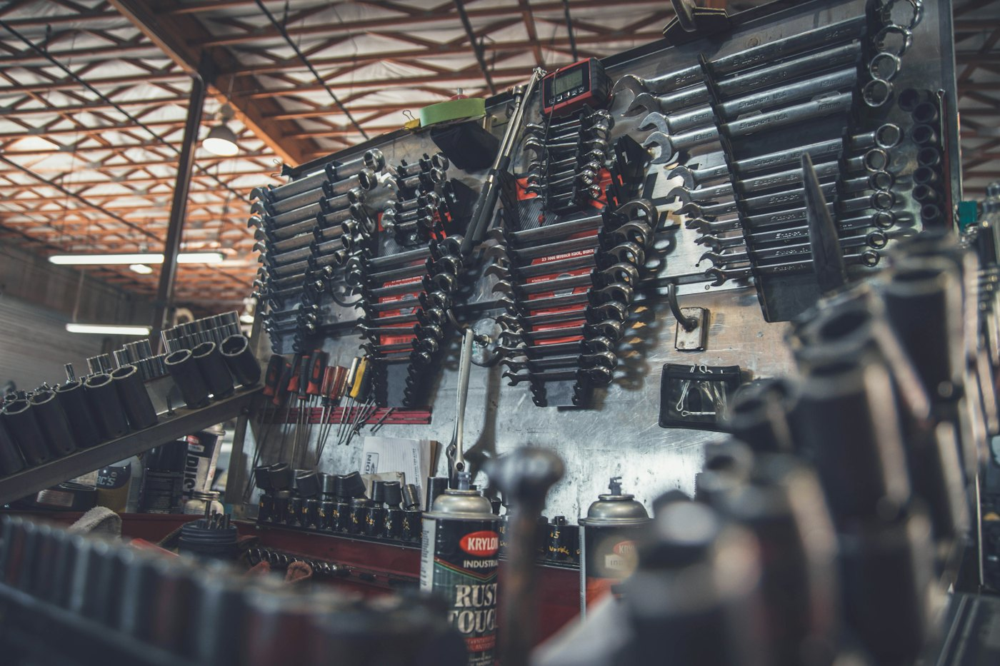

Диагностика автомобиля
- Компьютерная диагностика
- Диагностика подвески
- Диагностика электрики
- Диагностика автокондиционеров
- Диагностика АКПП и МКПП
СТО в Познани · Unii Lubelskiej 3/3A
Диагностика, двигатель, подвеска, тормоза, автоэлектрика и шиномонтаж. Общаемся по‑русски, записываем через Telegram‑бот — за пару минут, с подтверждением.

Услуги
Полный список работ — из нашего Telegram‑канала. Стоимость зависит от автомобиля: уточните по телефону или в Telegram.
Удобно записаться заранее — перед сезоном.
Отдельное направление — полный цикл работ
Бонусы за рекомендации
За каждого клиента, который по вашей рекомендации реально приехал на СТО, в Telegram‑боте начисляются баллы.
Открыть бота @forsage_servicebotБесплатная замена масла — работа
Бесплатная замена масла — масло и фильтр от Forsage
Почему Forsage
Объясним, что с машиной, на понятном языке — по‑русски. Канал и описание работ ведём на русском и польском.
От замены фильтров до капремонта двигателя, турбин и блоков управления — в одном месте.
Telegram‑бот: выбираете услугу, получаете подтверждение в мессенджере. Не нужно ждать ответа.
Пн–Пт с 9 до 18 и в субботу с 9 до 15 — можно заехать в выходной.
Unii Lubelskiej 3/3A — удобно подъехать с Żegrze, Chartowo и Rataje.
Отдельное направление — ремонт микроавтобусов: от подвески до электрики.
Как записаться
В Telegram‑боте за пару минут: диагностика, замена масла или шиномонтаж. Или просто позвоните.
@forsage_servicebotБот пришлёт подтверждение записи прямо в Telegram — без звонков и ожидания.
Unii Lubelskiej 3/3A, Poznań — рядом с Rondo Żegrze. Вопросы — администратору в Telegram.
@Forsage_Poznan1Фото






Как нас найти
61‑249 Poznań · рядом с Rondo Żegrze
| Понедельник – пятница | 9:00 – 18:00 |
|---|---|
| Суббота | 9:00 – 15:00 |
Запишитесь на диагностику — разберёмся и скажем, что делать.